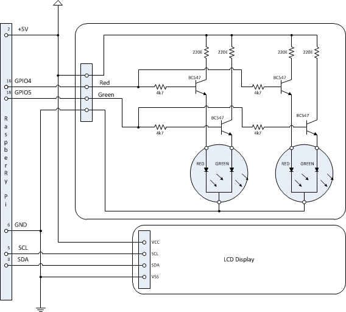

What is this?
Hobby project that involves a Plastic Tux penquin, whose eyes lit up with the status of a Jenkins/Hudson build and a LCD screen showing the Name of the Job and the persons who did the latest checkin's
Project is running on a Raspberry Pi using the pi4j.com library to drive the LED eyes connected to 2 GPIO pins and the LCD on the I2C pins
Installation instructions
- Install Raspian hard float image from here Raspian "Wheezy"
- make sure you run raspi-config as root
- Install java 1.8 preview from here java 1.8 preview with javafx and hardfloat support
- use update-alternatives to make sure it's the default
- make sure JAVA_HOME is set
- Install tomcat 7
- Optionally: compile and install the native jar from tomcat, made it about 10% faster for me
- Enable I2C instructions here enabling-i2c-on-raspberry-pi
- Note that on 1st revision boards, the I2C is on bus 0, on 2nd revision's it's on bus 1
- Clone this repository, run "mvn package" to build it
-
If you want to change some of the properties (I2C Bus, and address, and the admin user/password
look in /src/main/resources/props/default.props
or in the webapp dir in tomcat /pitux/WEB-INF/classes/props/default.props
- deploy war to tomcat
Schematic :
